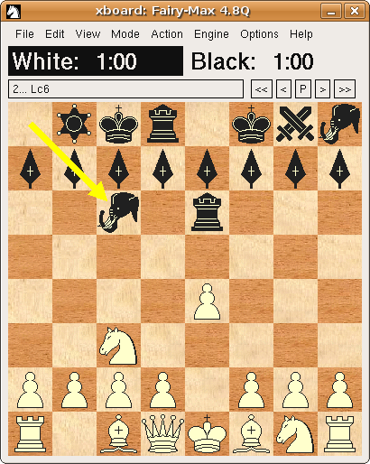

XBoard
XBoard is a graphical user interface for chess in all its major
forms, including international chess, xiangqi (Chinese chess),
shogi (Japanese chess) and Makruk, in addition to many minor variants such as
Losers Chess, Crazyhouse, Chess960 and Capablanca Chess. It displays a
chessboard on the screen, accepts moves made with the mouse, and loads
and saves games in Portable Game Notation (PGN). It serves as a
front-end for many different chess services, including:
-
Chess engines that will run on your machine and play a game against
you or help you analyze, such as GNU Chess, Crafty, or many
others.
- Chess servers on the Internet, where you can connect to play chess
with people from all over the world, watch other users play, or just
hang out and chat.
- Correspondence chess played by electronic mail. The CMail program
automates the tasks of parsing email from your opponent, playing his
moves out on your board, and mailing your reply move after you've
chosen it.
XBoard runs on Unix and Unix-like systems that use the X Window
System.
More...
|

XBoard, playing some Chess variant
|

WinBoard, configured with marble board
|
The project also includes a port to MicroSoft-Windows systems called
WinBoard.
You can find the downloads for binaries and preconfigured installer packages of Winboard at
the Winboard Forum,
where yo can also report problems, get help from other WinBoard users or discuss feature requests.
Windows builds of development versions or installers for special configuartions
can be found at HGM's web page.
Development for Winboard, reporting bugs and any other requests can
also be done at the same places as for XBoard (see below).
Downloading XBoard
stable version (4.7.2)
Sources of current stable version can be found on the main GNU ftp server:
http://ftp.gnu.org/gnu/xboard/ (via http) and
ftp://ftp.gnu.org/gnu/xboard/ (via ftp).
It can also be found on one of the mirrors
of ftp.gnu.org;
please use a mirror if
possible.
Precompiled versions are available
for openSUSE
and debian-sid
(if you know of other distribution that package it, please let us
know).
development version
We regularly do so called 'developer releases', which include the newest and the latest we are working on.
If you want to help us test, or just want to use the new features, you might prefer to use those over the stable version.
At the Open Build Server we provide packages that can be installed in parallel to the normal xboard version. To do this the programs are renamed to xboardnext (latest from the v4.7.x branch in git) and xboardgit (latest version from the master branch in git). Packages are available for: Debian 6.0, Fedora 17/18, RedHat RHEL 6, opensuse 12.1/12.2/12.3/Tumbleweed/Factory, Centos 6, Arch, Ubunutu 10.04/12.04/12.10. These packages are generated automatically and are for testing purposes only. Please let us know if you have any problems related to XBoard or package dependencies.
Windows builds of development version can often be found at HGM's web page.
Furthermore we provide development versions (tagged commits in git):
- A snapshot of the master branch is available: master-20130828.
- A snapshot of the release branch is available: (no developer release available at the moment)
How to build the development version
git version
The git repository is available on Savannah. All branches can be viewed there. The web page also provides tar-balls of all tagged versions, these tar-balls are different from the ones that you can download from the ftp-server and you will need to run ./autogen.sh on them as described below.
If you want to get a copy of the repository you can clone it using the command "git clone http://git.savannah.gnu.org/r/xboard.git". For more information on how to use git, please visit the git home page.
After cloning the git-repository or downloading and unpacking a snapshot tar-ball from the git repository,
run ./autogen.sh, ./configure and then make and make install.
tar-balls (from the ftp-server)
Unpack the tar ball and do ./configure followed by make and make install.
For development sources and other information, please see
the XBoard project
page at savannah.gnu.org.
archive
You can also find an archive of old versions on the ftp server.
The official manual page for XBoard is available online,
as is documentation for most GNU software.
This discusses every feature XBoard has in detail.
You may also find this information on your local system by
running info xboard or man xboard, or by
looking at /usr/doc/xboard/,
/usr/local/doc/xboard/, or similar directories on your system.
There now also exists an XBoard User Guide, which only presents the main features in a more pedestrian way.
This would be an excellent starting point if you are a novice XBoard user.
If you have prior experience with XBoard, but just want to know what new features have been added since the version you were used to,
the pages in the What's New section would be the place to go.
A description of the Chess Engine Communication Protocol used by XBoard to communicate with Chess Engines can be found here.
It would be great if people would like to help in the developing process. We can use all kinds of help, from people who just use the software and have a feature request (send them to developer mailing list), to people who can update/check the documentation and especially people who test development versions (send problems to the developer mailing list).
Have a look at the following list in case you are interested:
Translators
We added support for different languages to XBoard and need people to translate it. The translation is handled by the translation project. You can check on the current status and how to join the translation project.
Testers
We are always looking for people who are willing to test the latest new features and give us feedback or new ideas. If you are interested, please send an email to our list at <xboard-devel@gnu.org> or just try out the program and reports bugs either to the email list or to the bug-tracker (see below for links).
GTK developer needed
We are also working on merging Winboard and XBoard back into one version using a cross platform GTK-front end. This will help us clean up the code and make things like internationalization easier. We made some progress, if you know want to help out there are still lots of things waiting to be done. Email the mailing list for more information.
EPD test-suite capability
A sort of match mode where one engine automatically does a number of 'games',
(using a position file filled with EPDs as starting positions),
except that each 'game' lasts only for one move, and the 'result' is then computed
by XBoard depending on if this move was the correct solution specified in the EPD.
Multi-board ICS mode
Implement a slave mode where XBoard forks itself, connecting a pipe between
what normally would be the ICS socket of the child, and a new output channel
of the parent, so that the parent can forward board and move lists belonging to
a specific game to the slave dedicated to display it.
Update the documentation
The documentation could need some updates. In our effort to merge
Winboard and XBoard back together, we also want to merge the RTF file
back into the XBoard texinfo file. This will take some effort though,
since the two versions still differ in several areas and this would
need to be highlighted. The benefit would be though that we could
prepare a much better and up to date Windows documentation.
Update the webpage
The content of the webpage could be updated with screenshots from
the latest version. We also have a new tutorial that could be
integrated. The webpage should also be integrated with git, so that
all developers have access to it.
Links
- XBoard/Winboard
- Tim's original pages are still available.
- XBoard can also run engines that use the UCI protocol, with
the aid of the Polyglot protocol adapter. A new Polyglot
version, (1.4.67b), especially adapted to support the new
features of XBoard 4.4.0 and later, can be
found here.
- Incomplete list of computer engines that work with XBoard
- Chess server you can connect to using XBoard
- Other interfaces
Frequently Asked Question(FAQ)
If you have any questions, please check out our FAQ.
Mailing Lists and Discussion Forums
mailing lists
XBoard has two mailing lists:
<bug-xboard@gnu.org> and
<xboard-devel@gnu.org>.
The main discussion list is
<xboard-devel@gnu.org>,
and is used to discuss most aspects of XBoard, including development
and enhancement requests. Please send bug reports
to <bug-xboard@gnu.org>.
Announcements about XBoard and most other GNU software are made on
<info-gnu@gnu.org>.
To subscribe to these or any GNU mailing lists, please send an empty
mail with a Subject: header of just subscribe to the relevant
-request list. For example, to subscribe yourself to the GNU
announcement list, you would send mail to <info-gnu-request@gnu.org>.
Or you can use the mailing list web
interface.
discussion forums
A very active forum is the WinBoard Forum (where our current main developer HGM can be found).
Reporting Bugs and Requesting New Features
If you think you found a bug, please check the bugtracker for open and already closed bugs. If you found a new bug, please, file a bug-report either via our bug-related email list or in the bugtracker.
For feature requests, please use our mailinglist: <xboard-devel@gnu.org>.
Please remember that development of XBoard, and GNU in general, is a
volunteer effort, and you also can contribute. For information, please
read How to help GNU.
Licensing
XBoard
is free software; you can redistribute it and/or modify it under the
terms of the GNU General Public License as published by the Free
Software Foundation; either version 3 of the License, or (at your
option) any later version.
![[screenshot normal game]](graphics/xboard-4.4.0.png)
![[screenshot bughouse game]](graphics/xboard-4.4.0-variant.png)
![[screenshot shogi game]](graphics/xboard-4.4.0-showgi.png)

![[screenshot xiangqi game]](graphics/xboard-4.4.0-XQ.png)